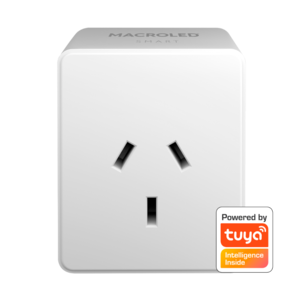
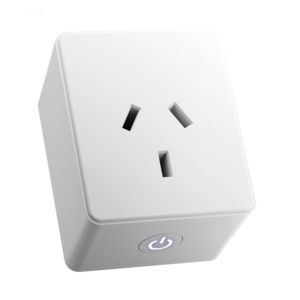

Tomacorrientes
Nos permiten hacer inteligentes diferentes tipos de electrodomésticos del hogar, como por ejemplo que la pava eléctrica se prenda por las mañanas, la lámpara de pie del living se prenda por las noches, etc.

